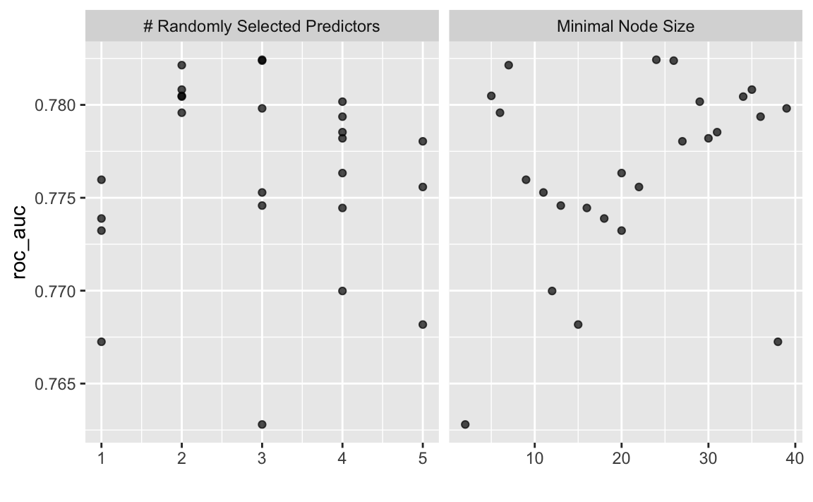
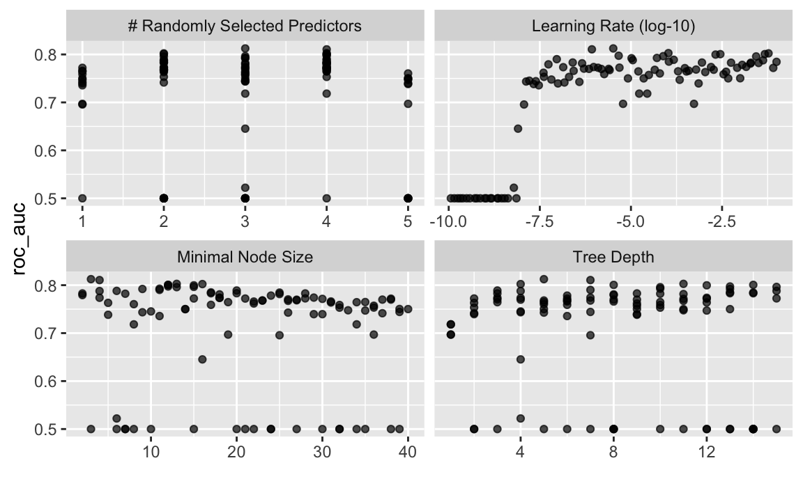

prep()) the recipeLet us predict survival at the Titanic disaster using the Kaggle competition data, download from here.
We will make use of the tidymodels approach.
library(tidyverse) # data wrangling
library(tidymodels) # modelling
library(broom) # tidy model output
library(DescTools) # Pseudo R^2
library(skimr) # overview on descriptives
library(gt) # nice tablestraindata_url <- "https://raw.githubusercontent.com/sebastiansauer/Statistiklehre/main/data/titanic/train.csv"
testdata_url <- "https://raw.githubusercontent.com/sebastiansauer/Statistiklehre/main/data/titanic/test.csv" train <- read_csv(traindata_url)
test <- read_csv(testdata_url)glimpse(train)
#> Rows: 891
#> Columns: 12
#> $ PassengerId <dbl> 1, 2, 3, 4, 5, 6, 7, 8, 9, 10, 11, 12, 13, 14, 15, 16, 17…
#> $ Survived <dbl> 0, 1, 1, 1, 0, 0, 0, 0, 1, 1, 1, 1, 0, 0, 0, 1, 0, 1, 0, …
#> $ Pclass <dbl> 3, 1, 3, 1, 3, 3, 1, 3, 3, 2, 3, 1, 3, 3, 3, 2, 3, 2, 3, …
#> $ Name <chr> "Braund, Mr. Owen Harris", "Cumings, Mrs. John Bradley (F…
#> $ Sex <chr> "male", "female", "female", "female", "male", "male", "ma…
#> $ Age <dbl> 22, 38, 26, 35, 35, NA, 54, 2, 27, 14, 4, 58, 20, 39, 14,…
#> $ SibSp <dbl> 1, 1, 0, 1, 0, 0, 0, 3, 0, 1, 1, 0, 0, 1, 0, 0, 4, 0, 1, …
#> $ Parch <dbl> 0, 0, 0, 0, 0, 0, 0, 1, 2, 0, 1, 0, 0, 5, 0, 0, 1, 0, 0, …
#> $ Ticket <chr> "A/5 21171", "PC 17599", "STON/O2. 3101282", "113803", "3…
#> $ Fare <dbl> 7.2500, 71.2833, 7.9250, 53.1000, 8.0500, 8.4583, 51.8625…
#> $ Cabin <chr> NA, "C85", NA, "C123", NA, NA, "E46", NA, NA, NA, "G6", "…
#> $ Embarked <chr> "S", "C", "S", "S", "S", "Q", "S", "S", "S", "C", "S", "S…The train data set lacks the “output” column, Survived, which makes sense.
dim(train)
#> [1] 891 12
dim(test)
#> [1] 418 11We will transform outcome variable from numeric to factor, which is necessary for many classification models.
train %>%
summarise(Survived_n_dist = n_distinct(Survived))
#> # A tibble: 1 x 1
#> Survived_n_dist
#> <int>
#> 1 2head(train$Survived)
#> [1] 0 1 1 1 0 0train <- train %>%
mutate(Survived = as.factor(Survived))head(train$Survived)
#> [1] 0 1 1 1 0 0
#> Levels: 0 1test <-
test %>%
mutate(Survived = NA)data <-
train %>%
bind_rows(test)split_titanic <- initial_time_split(data = data, prop = 891/1309)
train2 <- training(split_titanic)
test2 <- testing(split_titanic)skim(train)| Name | train |
| Number of rows | 891 |
| Number of columns | 12 |
| _______________________ | |
| Column type frequency: | |
| character | 5 |
| factor | 1 |
| numeric | 6 |
| ________________________ | |
| Group variables | None |
Variable type: character
| skim_variable | n_missing | complete_rate | min | max | empty | n_unique | whitespace |
|---|---|---|---|---|---|---|---|
| Name | 0 | 1.00 | 12 | 82 | 0 | 891 | 0 |
| Sex | 0 | 1.00 | 4 | 6 | 0 | 2 | 0 |
| Ticket | 0 | 1.00 | 3 | 18 | 0 | 681 | 0 |
| Cabin | 687 | 0.23 | 1 | 15 | 0 | 147 | 0 |
| Embarked | 2 | 1.00 | 1 | 1 | 0 | 3 | 0 |
Variable type: factor
| skim_variable | n_missing | complete_rate | ordered | n_unique | top_counts |
|---|---|---|---|---|---|
| Survived | 0 | 1 | FALSE | 2 | 0: 549, 1: 342 |
Variable type: numeric
| skim_variable | n_missing | complete_rate | mean | sd | p0 | p25 | p50 | p75 | p100 | hist |
|---|---|---|---|---|---|---|---|---|---|---|
| PassengerId | 0 | 1.0 | 446.00 | 257.35 | 1.00 | 223.50 | 446.00 | 668.5 | 891.00 | ▇▇▇▇▇ |
| Pclass | 0 | 1.0 | 2.31 | 0.84 | 1.00 | 2.00 | 3.00 | 3.0 | 3.00 | ▃▁▃▁▇ |
| Age | 177 | 0.8 | 29.70 | 14.53 | 0.42 | 20.12 | 28.00 | 38.0 | 80.00 | ▂▇▅▂▁ |
| SibSp | 0 | 1.0 | 0.52 | 1.10 | 0.00 | 0.00 | 0.00 | 1.0 | 8.00 | ▇▁▁▁▁ |
| Parch | 0 | 1.0 | 0.38 | 0.81 | 0.00 | 0.00 | 0.00 | 0.0 | 6.00 | ▇▁▁▁▁ |
| Fare | 0 | 1.0 | 32.20 | 49.69 | 0.00 | 7.91 | 14.45 | 31.0 | 512.33 | ▇▁▁▁▁ |
OK, for age, cabin, and embarked, we have some NAs. No NAs for Survived (outcome).
titanic_recipe <-
# define model formula:
recipe(Survived ~ Pclass + Age + SibSp + Parch + Fare, data = train) %>%
# Use "ID" etc as ID, not as predictor:
#update_role(Ticket, Cabin, Name, PassengerId, Embarked,
# new_role = "ID") %>%
update_role( Pclass , Age , SibSp , Parch , Fare, new_role="predictor") %>%
# Convert outcome variable from numeric to factor, to indicate classification
# step_num2factor(Survived, levels = c("0", "1")) %>% # not working, #todo
# impute missing values:
step_knnimpute(all_predictors(), neighbors = 3) %>%
# remove these vars:
#step_rm(Ticket, Cabin, Name, PassengerId, Embarked) %>%
# convert character and factor type variables into dummy variables:
step_dummy(all_nominal(), -all_outcomes()) %>%
# exclude near zero variance predictors:
step_nzv(all_predictors()) %>%
# exclude highly correlated vars:
step_corr(all_predictors()) %>%
# center (set mean to zero):
step_center(all_predictors(), -all_outcomes()) %>%
# set sd=1
step_scale(all_predictors(), -all_outcomes()) summary(titanic_recipe)
#> # A tibble: 6 x 4
#> variable type role source
#> <chr> <chr> <chr> <chr>
#> 1 Pclass numeric predictor original
#> 2 Age numeric predictor original
#> 3 SibSp numeric predictor original
#> 4 Parch numeric predictor original
#> 5 Fare numeric predictor original
#> 6 Survived nominal outcome originalThat is only the recipe, not the data (however the data are stored in the object too).
titanic_recipe
#> Data Recipe
#>
#> Inputs:
#>
#> role #variables
#> outcome 1
#> predictor 5
#>
#> Operations:
#>
#> K-nearest neighbor imputation for all_predictors()
#> Dummy variables from all_nominal(), -all_outcomes()
#> Sparse, unbalanced variable filter on all_predictors()
#> Correlation filter on all_predictors()
#> Centering for all_predictors(), -all_outcomes()
#> Scaling for all_predictors(), -all_outcomes()prep()) the recipetitanic_recipe_prepped <-
titanic_recipe %>%
prep(verbose = TRUE)
#> oper 1 step knnimpute [training]
#> oper 2 step dummy [training]
#> oper 3 step nzv [training]
#> oper 4 step corr [training]
#> oper 5 step center [training]
#> oper 6 step scale [training]
#> The retained training set is ~ 0.04 Mb in memory.titanic_recipe_prepped
#> Data Recipe
#>
#> Inputs:
#>
#> role #variables
#> outcome 1
#> predictor 5
#>
#> Training data contained 891 data points and 177 incomplete rows.
#>
#> Operations:
#>
#> K-nearest neighbor imputation for Age, SibSp, Parch, Fare, Pclass [trained]
#> Dummy variables were *not* created since no columns were selected. [trained]
#> Sparse, unbalanced variable filter removed no terms [trained]
#> Correlation filter removed no terms [trained]
#> Centering for Pclass, Age, SibSp, Parch, Fare [trained]
#> Scaling for Pclass, Age, SibSp, Parch, Fare [trained]summary(titanic_recipe_prepped)
#> # A tibble: 6 x 4
#> variable type role source
#> <chr> <chr> <chr> <chr>
#> 1 Pclass numeric predictor original
#> 2 Age numeric predictor original
#> 3 SibSp numeric predictor original
#> 4 Parch numeric predictor original
#> 5 Fare numeric predictor original
#> 6 Survived nominal outcome originalNote, from help(prep):
training: A data frame or tibble that will be used to estimate parameters for preprocessing.
Compare:
titanic_recipe
#> Data Recipe
#>
#> Inputs:
#>
#> role #variables
#> outcome 1
#> predictor 5
#>
#> Operations:
#>
#> K-nearest neighbor imputation for all_predictors()
#> Dummy variables from all_nominal(), -all_outcomes()
#> Sparse, unbalanced variable filter on all_predictors()
#> Correlation filter on all_predictors()
#> Centering for all_predictors(), -all_outcomes()
#> Scaling for all_predictors(), -all_outcomes()With:
titanic_recipe_prepped
#> Data Recipe
#>
#> Inputs:
#>
#> role #variables
#> outcome 1
#> predictor 5
#>
#> Training data contained 891 data points and 177 incomplete rows.
#>
#> Operations:
#>
#> K-nearest neighbor imputation for Age, SibSp, Parch, Fare, Pclass [trained]
#> Dummy variables were *not* created since no columns were selected. [trained]
#> Sparse, unbalanced variable filter removed no terms [trained]
#> Correlation filter removed no terms [trained]
#> Centering for Pclass, Age, SibSp, Parch, Fare [trained]
#> Scaling for Pclass, Age, SibSp, Parch, Fare [trained]For example, we see that the mean values for Centering have been trained during the prep() step. Note that the steps are still not applied to the data set. That is what bake() is for. AFAIK, train() will do that automatically, so no action needed for the test set in that regard.
See here an complete of currently available preprocessing steps – more than 100 as to date.
Squize the juice out of the prepared recipe …
juice(titanic_recipe_prepped) %>%
head()
#> # A tibble: 6 x 6
#> Pclass Age SibSp Parch Fare Survived
#> <dbl> <dbl> <dbl> <dbl> <dbl> <fct>
#> 1 0.827 -0.536 0.433 -0.473 -0.502 0
#> 2 -1.57 0.634 0.433 -0.473 0.786 1
#> 3 0.827 -0.244 -0.474 -0.473 -0.489 1
#> 4 -1.57 0.415 0.433 -0.473 0.420 1
#> 5 0.827 0.415 -0.474 -0.473 -0.486 0
#> 6 0.827 -0.414 -0.474 -0.473 -0.478 0Are there any NAs in the prepped data set?
juice(titanic_recipe_prepped) %>%
map(~ sum(is.na(.x)))
#> $Pclass
#> [1] 0
#>
#> $Age
#> [1] 0
#>
#> $SibSp
#> [1] 0
#>
#> $Parch
#> [1] 0
#>
#> $Fare
#> [1] 0
#>
#> $Survived
#> [1] 0train_juice <- juice(titanic_recipe_prepped)bake(titanic_recipe_prepped, new_data = NULL)
#> # A tibble: 891 x 6
#> Pclass Age SibSp Parch Fare Survived
#> <dbl> <dbl> <dbl> <dbl> <dbl> <fct>
#> 1 0.827 -0.536 0.433 -0.473 -0.502 0
#> 2 -1.57 0.634 0.433 -0.473 0.786 1
#> 3 0.827 -0.244 -0.474 -0.473 -0.489 1
#> 4 -1.57 0.415 0.433 -0.473 0.420 1
#> 5 0.827 0.415 -0.474 -0.473 -0.486 0
#> 6 0.827 -0.414 -0.474 -0.473 -0.478 0
#> 7 -1.57 1.81 -0.474 -0.473 0.396 0
#> 8 0.827 -2.00 2.25 0.767 -0.224 0
#> 9 0.827 -0.171 -0.474 2.01 -0.424 1
#> 10 -0.369 -1.12 0.433 -0.473 -0.0429 1
#> # … with 881 more rowsWARNING #todo
test_baked <-
titanic_recipe_prepped %>%
bake(new_data = test)lr_mod <-
logistic_reg() %>%
set_engine("glm") %>%
set_mode("classification")lr_mod
#> Logistic Regression Model Specification (classification)
#>
#> Computational engine: glmtitanic_wf1 <-
workflow() %>%
add_model(lr_mod) %>%
add_recipe(titanic_recipe)titanic_wf1
#> ══ Workflow ════════════════════════════════════════════════════════════════════
#> Preprocessor: Recipe
#> Model: logistic_reg()
#>
#> ── Preprocessor ────────────────────────────────────────────────────────────────
#> 6 Recipe Steps
#>
#> ● step_knnimpute()
#> ● step_dummy()
#> ● step_nzv()
#> ● step_corr()
#> ● step_center()
#> ● step_scale()
#>
#> ── Model ───────────────────────────────────────────────────────────────────────
#> Logistic Regression Model Specification (classification)
#>
#> Computational engine: glmtitanic_fit_lr <-
titanic_wf1 %>%
fit(data = train)Model performance on train data:
titanic_fit_lr %>%
pull_workflow_fit() %>%
tidy()
#> # A tibble: 6 x 5
#> term estimate std.error statistic p.value
#> <chr> <dbl> <dbl> <dbl> <dbl>
#> 1 (Intercept) -0.526 0.0765 -6.88 6.05e-12
#> 2 Pclass -0.853 0.107 -7.97 1.58e-15
#> 3 Age -0.570 0.0933 -6.11 1.01e- 9
#> 4 SibSp -0.312 0.0965 -3.24 1.21e- 3
#> 5 Parch 0.178 0.0837 2.12 3.38e- 2
#> 6 Fare 0.208 0.121 1.72 8.48e- 2titanic_fit_lr %>%
pull_workflow_fit() %>%
glance()
#> # A tibble: 1 x 8
#> null.deviance df.null logLik AIC BIC deviance df.residual
#> <dbl> <int> <dbl> <dbl> <dbl> <dbl> <int>
#> 1 1187. 890 -514. 1040. 1069. 1028. 885
#> # … with 1 more variable: nobs <int>titanic_fit_lr %>%
pull_workflow_fit() %>%
summary()
#> Length Class Mode
#> lvl 2 -none- character
#> spec 6 logistic_reg list
#> fit 30 glm list
#> preproc 2 -none- list
#> elapsed 5 proc_time numericpull_workflow_prepped_recipe(titanic_fit_lr)
#> Data Recipe
#>
#> Inputs:
#>
#> role #variables
#> outcome 1
#> predictor 5
#>
#> Training data contained 891 data points and 177 incomplete rows.
#>
#> Operations:
#>
#> K-nearest neighbor imputation for Age, SibSp, Parch, ... [trained]
#> Dummy variables were *not* created since no columns were selected. [trained]
#> Sparse, unbalanced variable filter removed no terms [trained]
#> Correlation filter removed no terms [trained]
#> Centering for Pclass, Age, SibSp, Parch, Fare [trained]
#> Scaling for Pclass, Age, SibSp, Parch, Fare [trained]Hm, for some reason, not working. #todo
pull_workflow_fit %>%
PseudoR2()
#> [1] NAtitanic_fit_lr %>%
pluck("fit")
#> $actions
#> $actions$model
#> $spec
#> Logistic Regression Model Specification (classification)
#>
#> Computational engine: glm
#>
#>
#> $formula
#> NULL
#>
#> attr(,"class")
#> [1] "action_model" "action_fit" "action"
#>
#>
#> $fit
#> parsnip model object
#>
#> Fit time: 8ms
#>
#> Call: stats::glm(formula = ..y ~ ., family = stats::binomial, data = data)
#>
#> Coefficients:
#> (Intercept) Pclass Age SibSp
#> -0.5264 -0.8532 -0.5700 -0.3123
#> Parch Fare
#> 0.1776 0.2081
#>
#> Degrees of Freedom: 890 Total (i.e. Null); 885 Residual
#> Null Deviance: 1187
#> Residual Deviance: 1028 AIC: 1040
#>
#> attr(,"class")
#> [1] "stage_fit" "stage"test_with_pred <-
test %>%
bind_cols(predict(titanic_fit_lr, test_baked)) %>%
rename(pred_glm1 = .pred_class)glimpse(test_with_pred)
#> Rows: 418
#> Columns: 13
#> $ PassengerId <dbl> 892, 893, 894, 895, 896, 897, 898, 899, 9…
#> $ Pclass <dbl> 3, 3, 2, 3, 3, 3, 3, 2, 3, 3, 3, 1, 1, 2,…
#> $ Name <chr> "Kelly, Mr. James", "Wilkes, Mrs. James (…
#> $ Sex <chr> "male", "female", "male", "male", "female…
#> $ Age <dbl> 34.5, 47.0, 62.0, 27.0, 22.0, 14.0, 30.0,…
#> $ SibSp <dbl> 0, 1, 0, 0, 1, 0, 0, 1, 0, 2, 0, 0, 1, 1,…
#> $ Parch <dbl> 0, 0, 0, 0, 1, 0, 0, 1, 0, 0, 0, 0, 0, 0,…
#> $ Ticket <chr> "330911", "363272", "240276", "315154", "…
#> $ Fare <dbl> 7.8292, 7.0000, 9.6875, 8.6625, 12.2875, …
#> $ Cabin <chr> NA, NA, NA, NA, NA, NA, NA, NA, NA, NA, N…
#> $ Embarked <chr> "Q", "S", "Q", "S", "S", "S", "Q", "S", "…
#> $ Survived <lgl> NA, NA, NA, NA, NA, NA, NA, NA, NA, NA, N…
#> $ pred_glm1 <fct> 1, 1, 1, 1, 1, 1, 1, 1, 1, 1, 1, 1, 1, 1,…test_with_pred %>%
select(PassengerId, Survived = pred_glm1) %>%
write_csv(file = "titanic-glm1.csv")rf_mod1 <-
rand_forest() %>%
set_engine("ranger") %>%
set_mode("classification")rf_mod1
#> Random Forest Model Specification (classification)
#>
#> Computational engine: rangerrf_workflow1 <-
workflow() %>%
add_model(rf_mod1) %>%
add_recipe(titanic_recipe)rf_fit1 <-
rf_workflow1 %>%
fit(data = train)rf_fit1
#> ══ Workflow [trained] ══════════════════════════════════════════
#> Preprocessor: Recipe
#> Model: rand_forest()
#>
#> ── Preprocessor ────────────────────────────────────────────────
#> 6 Recipe Steps
#>
#> ● step_knnimpute()
#> ● step_dummy()
#> ● step_nzv()
#> ● step_corr()
#> ● step_center()
#> ● step_scale()
#>
#> ── Model ───────────────────────────────────────────────────────
#> Ranger result
#>
#> Call:
#> ranger::ranger(x = maybe_data_frame(x), y = y, num.threads = 1, verbose = FALSE, seed = sample.int(10^5, 1), probability = TRUE)
#>
#> Type: Probability estimation
#> Number of trees: 500
#> Sample size: 891
#> Number of independent variables: 5
#> Mtry: 2
#> Target node size: 10
#> Variable importance mode: none
#> Splitrule: gini
#> OOB prediction error (Brier s.): 0.184434rf1_preds <-
rf_fit1 %>%
predict(new_data = test_baked) %>%
bind_cols(test) %>%
select(-Survived) %>%
select(PassengerId, Survived = .pred_class)glimpse(rf1_preds)
#> Rows: 418
#> Columns: 2
#> $ PassengerId <dbl> 892, 893, 894, 895, 896, 897, 898, 899, 9…
#> $ Survived <fct> 0, 0, 0, 0, 1, 0, 0, 1, 0, 1, 0, 0, 0, 0,…pred_rf1 %>%
write_csv(file = "titanic-rf1.csv")cores <- parallel::detectCores()
cores
#> [1] 8rf_mod2 <-
rand_forest(mtry = tune(), min_n = tune(), trees = 1000) %>%
set_engine("ranger", num.threads = cores) %>%
set_mode("classification")rf_mod2
#> Random Forest Model Specification (classification)
#>
#> Main Arguments:
#> mtry = tune()
#> trees = 1000
#> min_n = tune()
#>
#> Engine-Specific Arguments:
#> num.threads = cores
#>
#> Computational engine: rangerParameters that can be tuned:
rf_mod2 %>%
parameters()
#> Collection of 2 parameters for tuning
#>
#> identifier type object
#> mtry mtry nparam[?]
#> min_n min_n nparam[+]
#>
#> Model parameters needing finalization:
#> # Randomly Selected Predictors ('mtry')
#>
#> See `?dials::finalize` or `?dials::update.parameters` for more information.train_cv <- vfold_cv(train, v = 10)10-times CV:
train_cv
#> # 10-fold cross-validation
#> # A tibble: 10 x 2
#> splits id
#> <list> <chr>
#> 1 <split [801/90]> Fold01
#> 2 <split [802/89]> Fold02
#> 3 <split [802/89]> Fold03
#> 4 <split [802/89]> Fold04
#> 5 <split [802/89]> Fold05
#> 6 <split [802/89]> Fold06
#> 7 <split [802/89]> Fold07
#> 8 <split [802/89]> Fold08
#> 9 <split [802/89]> Fold09
#> 10 <split [802/89]> Fold10rf_workflow2 <-
workflow() %>%
add_model(rf_mod2) %>%
add_recipe(titanic_recipe)rf_workflow2
#> ══ Workflow ════════════════════════════════════════════════════
#> Preprocessor: Recipe
#> Model: rand_forest()
#>
#> ── Preprocessor ────────────────────────────────────────────────
#> 6 Recipe Steps
#>
#> ● step_knnimpute()
#> ● step_dummy()
#> ● step_nzv()
#> ● step_corr()
#> ● step_center()
#> ● step_scale()
#>
#> ── Model ───────────────────────────────────────────────────────
#> Random Forest Model Specification (classification)
#>
#> Main Arguments:
#> mtry = tune()
#> trees = 1000
#> min_n = tune()
#>
#> Engine-Specific Arguments:
#> num.threads = cores
#>
#> Computational engine: rangerset.seed(42)
t1 <- Sys.time()
rf_res2 <-
rf_workflow2 %>%
tune_grid(resamples = train_cv,
grid = 25,
control = control_grid(save_pred = TRUE),
metrics = metric_set(roc_auc))
t2 <- Sys.time()
t2 - t1
#> Time difference of 2.353574 minsIt may be worthwhile to save the object to disk, in order to save computation time:
saveRDS(rf_res2, file = "rf_res2.rds")rf_res2 %>%
collect_metrics()
#> # A tibble: 25 x 8
#> mtry min_n .metric .estimator mean n std_err .config
#> <int> <int> <chr> <chr> <dbl> <int> <dbl> <chr>
#> 1 3 11 roc_auc binary 0.775 10 0.0160 Preproces…
#> 2 1 18 roc_auc binary 0.774 10 0.0150 Preproces…
#> 3 3 26 roc_auc binary 0.782 10 0.0149 Preproces…
#> 4 2 7 roc_auc binary 0.782 10 0.0163 Preproces…
#> 5 1 20 roc_auc binary 0.773 10 0.0154 Preproces…
#> 6 2 6 roc_auc binary 0.780 10 0.0164 Preproces…
#> 7 5 27 roc_auc binary 0.778 10 0.0156 Preproces…
#> 8 4 16 roc_auc binary 0.774 10 0.0157 Preproces…
#> 9 5 15 roc_auc binary 0.768 10 0.0160 Preproces…
#> 10 3 24 roc_auc binary 0.782 10 0.0149 Preproces…
#> # … with 15 more rowsrf_res2 %>%
show_best(metric = "roc_auc")
#> # A tibble: 5 x 8
#> mtry min_n .metric .estimator mean n std_err .config
#> <int> <int> <chr> <chr> <dbl> <int> <dbl> <chr>
#> 1 3 24 roc_auc binary 0.782 10 0.0149 Preprocess…
#> 2 3 26 roc_auc binary 0.782 10 0.0149 Preprocess…
#> 3 2 7 roc_auc binary 0.782 10 0.0163 Preprocess…
#> 4 2 35 roc_auc binary 0.781 10 0.0146 Preprocess…
#> 5 2 5 roc_auc binary 0.780 10 0.0159 Preprocess…autoplot(rf_res2)
rf_best2 <-
rf_res2 %>%
select_best(metric = "roc_auc")
rf_best2
#> # A tibble: 1 x 3
#> mtry min_n .config
#> <int> <int> <chr>
#> 1 3 24 Preprocessor1_Model10rf_final_wf2 <-
rf_workflow2 %>%
finalize_workflow(rf_best2)So, here is the best model:
rf_final_wf2
#> ══ Workflow ════════════════════════════════════════════════════
#> Preprocessor: Recipe
#> Model: rand_forest()
#>
#> ── Preprocessor ────────────────────────────────────────────────
#> 6 Recipe Steps
#>
#> ● step_knnimpute()
#> ● step_dummy()
#> ● step_nzv()
#> ● step_corr()
#> ● step_center()
#> ● step_scale()
#>
#> ── Model ───────────────────────────────────────────────────────
#> Random Forest Model Specification (classification)
#>
#> Main Arguments:
#> mtry = 3
#> trees = 1000
#> min_n = 24
#>
#> Engine-Specific Arguments:
#> num.threads = cores
#>
#> Computational engine: rangerLet us fit this model to the train data:
last_rf_mod2 <-
rf_final_wf2 %>%
fit(data = train)last_rf_mod2
#> ══ Workflow [trained] ══════════════════════════════════════════
#> Preprocessor: Recipe
#> Model: rand_forest()
#>
#> ── Preprocessor ────────────────────────────────────────────────
#> 6 Recipe Steps
#>
#> ● step_knnimpute()
#> ● step_dummy()
#> ● step_nzv()
#> ● step_corr()
#> ● step_center()
#> ● step_scale()
#>
#> ── Model ───────────────────────────────────────────────────────
#> Ranger result
#>
#> Call:
#> ranger::ranger(x = maybe_data_frame(x), y = y, mtry = min_cols(~3L, x), num.trees = ~1000, min.node.size = min_rows(~24L, x), num.threads = ~cores, verbose = FALSE, seed = sample.int(10^5, 1), probability = TRUE)
#>
#> Type: Probability estimation
#> Number of trees: 1000
#> Sample size: 891
#> Number of independent variables: 5
#> Mtry: 3
#> Target node size: 24
#> Variable importance mode: none
#> Splitrule: gini
#> OOB prediction error (Brier s.): 0.1850163 # rand_forest(mtry = rf_best2[["mtry"]][1],
# min_n = rf_best2[["min_n"]][1],
# trees = 1000) %>%
# set_engine("ranger",
# num.threads = cores,
# importance = "impurity") %>%
# set_mode("classification")Update workflow with best fit parameters
# last_rf_workflow2 <-
# rf_workflow2 %>%
# update_model(last_rf_mod)set.seed(345)
last_rf_fit2 <-
last_rf_mod2 %>%
last_fit(split_titanic)rf2_preds <-
last_rf_fit2 %>%
collect_predictions() %>%
select(-Survived) %>%
select(PassengerID = .row, Survived = .pred_class) glimpse(rf2_preds)
#> Rows: 418
#> Columns: 2
#> $ PassengerID <int> 892, 893, 894, 895, 896, 897, 898, 899, 9…
#> $ Survived <fct> 0, 0, 0, 0, 0, 0, 0, 1, 0, 0, 0, 0, 1, 0,…rf2_preds %>%
write_csv(file = "titanic-rf2.csv")boost_mod <-
boost_tree(mtry = tune(),
min_n = tune(),
learn_rate = tune(),
tree_depth = tune()) %>%
set_engine("xgboost", num.threads = cores) %>%
set_mode("classification")boost_mod
#> Boosted Tree Model Specification (classification)
#>
#> Main Arguments:
#> mtry = tune()
#> min_n = tune()
#> tree_depth = tune()
#> learn_rate = tune()
#>
#> Engine-Specific Arguments:
#> num.threads = cores
#>
#> Computational engine: xgboostTranslate to xgboost() specs:
translate(boost_mod)
#> Boosted Tree Model Specification (classification)
#>
#> Main Arguments:
#> mtry = tune()
#> min_n = tune()
#> tree_depth = tune()
#> learn_rate = tune()
#>
#> Engine-Specific Arguments:
#> num.threads = cores
#>
#> Computational engine: xgboost
#>
#> Model fit template:
#> parsnip::xgb_train(x = missing_arg(), y = missing_arg(), colsample_bytree = tune(),
#> min_child_weight = tune(), max_depth = tune(), eta = tune(),
#> num.threads = cores, nthread = 1, verbose = 0)Why does it say ntread = 1? Should be more cores, right? #todo
Parameters that can be tuned:
boost_mod %>%
parameters()
#> Collection of 4 parameters for tuning
#>
#> identifier type object
#> mtry mtry nparam[?]
#> min_n min_n nparam[+]
#> tree_depth tree_depth nparam[+]
#> learn_rate learn_rate nparam[+]
#>
#> Model parameters needing finalization:
#> # Randomly Selected Predictors ('mtry')
#>
#> See `?dials::finalize` or `?dials::update.parameters` for more information.boost_wf <-
workflow() %>%
add_model(boost_mod) %>%
add_recipe(titanic_recipe)boost_wf
#> ══ Workflow ════════════════════════════════════════════════════
#> Preprocessor: Recipe
#> Model: boost_tree()
#>
#> ── Preprocessor ────────────────────────────────────────────────
#> 6 Recipe Steps
#>
#> ● step_knnimpute()
#> ● step_dummy()
#> ● step_nzv()
#> ● step_corr()
#> ● step_center()
#> ● step_scale()
#>
#> ── Model ───────────────────────────────────────────────────────
#> Boosted Tree Model Specification (classification)
#>
#> Main Arguments:
#> mtry = tune()
#> min_n = tune()
#> tree_depth = tune()
#> learn_rate = tune()
#>
#> Engine-Specific Arguments:
#> num.threads = cores
#>
#> Computational engine: xgboostset.seed(234)
val_set <- validation_split(train,
strata = Survived,
prop = 0.80)set.seed(42)
t1 <- Sys.time()
boost_fit <-
boost_wf %>%
tune_grid(val_set,
grid = 100,
control = control_grid(save_pred = TRUE),
metrics = metric_set(roc_auc))
t2 <- Sys.time()
t2 - t1
#> Time difference of 1.077099 minsboost_fit %>%
show_best(metric = "roc_auc")
#> # A tibble: 5 x 10
#> mtry min_n tree_depth learn_rate .metric .estimator mean
#> <int> <int> <int> <dbl> <chr> <chr> <dbl>
#> 1 3 3 5 3.27e-6 roc_auc binary 0.813
#> 2 4 4 7 8.47e-7 roc_auc binary 0.811
#> 3 4 13 11 1.07e-4 roc_auc binary 0.803
#> 4 2 16 4 5.95e-2 roc_auc binary 0.802
#> 5 2 12 14 4.70e-2 roc_auc binary 0.801
#> # … with 3 more variables: n <int>, std_err <dbl>,
#> # .config <chr>autoplot(boost_fit)
boost_best <-
boost_fit %>%
select_best(metric = "roc_auc")
boost_best
#> # A tibble: 1 x 5
#> mtry min_n tree_depth learn_rate .config
#> <int> <int> <int> <dbl> <chr>
#> 1 3 3 5 0.00000327 Preprocessor1_Model057boost_final_wf <-
boost_wf %>%
finalize_workflow(boost_best)# last_boost_mod <-
# boost_tree(mtry = boost_best[["mtry"]][1],
# min_n = boost_best[["min_n"]][1],
# tree_depth = boost_best[["tree_depth"]][1],
# trees = 1000) %>%
# set_engine("xgboost",
# num.threads = cores,
# importance = "impurity") %>%
# set_mode("classification")Update workflow with best fit parameters
# last_boost_workflow <-
# boost_wf %>%
# update_model(last_boost_mod)# set.seed(345)
# last_boost_fit <-
# last_boost_workflow %>%
# fit(data = train)set.seed(345)
last_boost_results <-
boost_final_wf %>%
last_fit(split_titanic)last_boost_results
#> # Resampling results
#> # Manual resampling
#> # A tibble: 1 x 6
#> splits id .metrics .notes .predictions .workflow
#> <list> <chr> <list> <list> <list> <list>
#> 1 <split [… train/t… <tibble [… <tibble… <tibble [418… <workflo…boost_preds <-
last_boost_results %>%
collect_predictions() %>%
select(-Survived) %>%
select(PassengerID = .row, Survived = .pred_class)glimpse(boost_preds)
#> Rows: 418
#> Columns: 2
#> $ PassengerID <int> 892, 893, 894, 895, 896, 897, 898, 899, 9…
#> $ Survived <fct> 0, 0, 0, 0, 1, 0, 0, 1, 0, 0, 0, 0, 1, 0,…boost_preds %>%
write_csv(file = "titanic-boost.csv")tidymodels appear to be a nice framework, but not without some difficulties. I needed some time to wrap my head around it; in effect, I am still picking it up.
Computing many models in the way I worked here is bound to end up in disaster: Too many object to rename and to keep track off. There are better ways needed such as this one. Alternatively, one might seek shelter in object oriented programming, which is beautiful in theory, but not without complexites. See mlr3 for a great implementation.
Here is a quite similar case study on Kaggle.
This is a great case study on tidymodels, by Bruno Rodrigues. Similarly, by the same author, this post.
#> ─ Session info ───────────────────────────────────────────────────────────────────────────────────────────────────────
#> setting value
#> version R version 4.0.2 (2020-06-22)
#> os macOS Catalina 10.15.7
#> system x86_64, darwin17.0
#> ui X11
#> language (EN)
#> collate en_US.UTF-8
#> ctype en_US.UTF-8
#> tz Europe/Berlin
#> date 2020-12-08
#>
#> ─ Packages ───────────────────────────────────────────────────────────────────────────────────────────────────────────
#> package * version date lib source
#> assertthat 0.2.1 2019-03-21 [1] CRAN (R 4.0.0)
#> backports 1.2.0 2020-11-02 [1] CRAN (R 4.0.2)
#> blogdown 0.21 2020-10-11 [1] CRAN (R 4.0.2)
#> bookdown 0.21 2020-10-13 [1] CRAN (R 4.0.2)
#> broom 0.7.2 2020-10-20 [1] CRAN (R 4.0.2)
#> callr 3.5.1 2020-10-13 [1] CRAN (R 4.0.2)
#> cellranger 1.1.0 2016-07-27 [1] CRAN (R 4.0.0)
#> cli 2.2.0 2020-11-20 [1] CRAN (R 4.0.2)
#> codetools 0.2-16 2018-12-24 [2] CRAN (R 4.0.2)
#> colorspace 2.0-0 2020-11-11 [1] CRAN (R 4.0.2)
#> crayon 1.3.4 2017-09-16 [1] CRAN (R 4.0.0)
#> DBI 1.1.0 2019-12-15 [1] CRAN (R 4.0.0)
#> dbplyr 2.0.0 2020-11-03 [1] CRAN (R 4.0.2)
#> desc 1.2.0 2018-05-01 [1] CRAN (R 4.0.0)
#> devtools 2.3.2 2020-09-18 [1] CRAN (R 4.0.2)
#> digest 0.6.27 2020-10-24 [1] CRAN (R 4.0.2)
#> dplyr * 1.0.2 2020-08-18 [1] CRAN (R 4.0.2)
#> ellipsis 0.3.1 2020-05-15 [1] CRAN (R 4.0.0)
#> evaluate 0.14 2019-05-28 [1] CRAN (R 4.0.0)
#> fansi 0.4.1 2020-01-08 [1] CRAN (R 4.0.0)
#> forcats * 0.5.0 2020-03-01 [1] CRAN (R 4.0.0)
#> fs 1.5.0 2020-07-31 [1] CRAN (R 4.0.2)
#> generics 0.1.0 2020-10-31 [1] CRAN (R 4.0.2)
#> ggplot2 * 3.3.2 2020-06-19 [1] CRAN (R 4.0.0)
#> glue 1.4.2 2020-08-27 [1] CRAN (R 4.0.2)
#> gtable 0.3.0 2019-03-25 [1] CRAN (R 4.0.0)
#> haven 2.3.1 2020-06-01 [1] CRAN (R 4.0.0)
#> hms 0.5.3 2020-01-08 [1] CRAN (R 4.0.0)
#> htmltools 0.5.0 2020-06-16 [1] CRAN (R 4.0.0)
#> httr 1.4.2 2020-07-20 [1] CRAN (R 4.0.2)
#> jsonlite 1.7.1 2020-09-07 [1] CRAN (R 4.0.2)
#> knitr 1.30 2020-09-22 [1] CRAN (R 4.0.2)
#> lifecycle 0.2.0 2020-03-06 [1] CRAN (R 4.0.0)
#> lubridate 1.7.9.2 2020-11-13 [1] CRAN (R 4.0.2)
#> magrittr 2.0.1 2020-11-17 [1] CRAN (R 4.0.2)
#> memoise 1.1.0 2017-04-21 [1] CRAN (R 4.0.0)
#> modelr 0.1.8 2020-05-19 [1] CRAN (R 4.0.0)
#> munsell 0.5.0 2018-06-12 [1] CRAN (R 4.0.0)
#> pillar 1.4.7 2020-11-20 [1] CRAN (R 4.0.2)
#> pkgbuild 1.1.0 2020-07-13 [1] CRAN (R 4.0.2)
#> pkgconfig 2.0.3 2019-09-22 [1] CRAN (R 4.0.0)
#> pkgload 1.1.0 2020-05-29 [1] CRAN (R 4.0.0)
#> prettyunits 1.1.1 2020-01-24 [1] CRAN (R 4.0.0)
#> processx 3.4.5 2020-11-30 [1] CRAN (R 4.0.2)
#> ps 1.4.0 2020-10-07 [1] CRAN (R 4.0.2)
#> purrr * 0.3.4 2020-04-17 [1] CRAN (R 4.0.0)
#> R6 2.5.0 2020-10-28 [1] CRAN (R 4.0.2)
#> Rcpp 1.0.5 2020-07-06 [1] CRAN (R 4.0.2)
#> readr * 1.4.0 2020-10-05 [1] CRAN (R 4.0.2)
#> readxl 1.3.1 2019-03-13 [1] CRAN (R 4.0.0)
#> remotes 2.2.0 2020-07-21 [1] CRAN (R 4.0.2)
#> reprex 0.3.0 2019-05-16 [1] CRAN (R 4.0.0)
#> rlang 0.4.9 2020-11-26 [1] CRAN (R 4.0.2)
#> rmarkdown 2.5 2020-10-21 [1] CRAN (R 4.0.2)
#> rprojroot 2.0.2 2020-11-15 [1] CRAN (R 4.0.2)
#> rstudioapi 0.13 2020-11-12 [1] CRAN (R 4.0.2)
#> rvest 0.3.6 2020-07-25 [1] CRAN (R 4.0.2)
#> scales 1.1.1 2020-05-11 [1] CRAN (R 4.0.0)
#> sessioninfo 1.1.1 2018-11-05 [1] CRAN (R 4.0.0)
#> stringi 1.5.3 2020-09-09 [1] CRAN (R 4.0.2)
#> stringr * 1.4.0 2019-02-10 [1] CRAN (R 4.0.0)
#> testthat 3.0.0 2020-10-31 [1] CRAN (R 4.0.2)
#> tibble * 3.0.4 2020-10-12 [1] CRAN (R 4.0.2)
#> tidyr * 1.1.2 2020-08-27 [1] CRAN (R 4.0.2)
#> tidyselect 1.1.0 2020-05-11 [1] CRAN (R 4.0.0)
#> tidyverse * 1.3.0 2019-11-21 [1] CRAN (R 4.0.0)
#> usethis 1.6.3 2020-09-17 [1] CRAN (R 4.0.2)
#> vctrs 0.3.5 2020-11-17 [1] CRAN (R 4.0.2)
#> withr 2.3.0 2020-09-22 [1] CRAN (R 4.0.2)
#> xfun 0.19 2020-10-30 [1] CRAN (R 4.0.2)
#> xml2 1.3.2 2020-04-23 [1] CRAN (R 4.0.0)
#> yaml 2.2.1 2020-02-01 [1] CRAN (R 4.0.0)
#>
#> [1] /Users/sebastiansaueruser/Rlibs
#> [2] /Library/Frameworks/R.framework/Versions/4.0/Resources/library